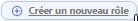
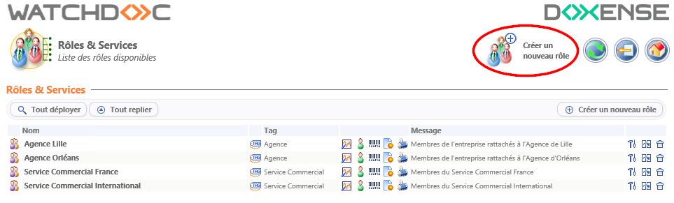
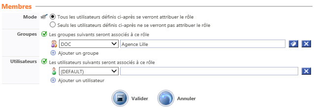

Créer un Rôle
-
Depuis le Menu principal de l'interface d'administration de Watchdoc, dans la section Configuration, cliquez sur Rôles et Services.
èVous accédez à la liste des rôles déclarés dans Watchdoc.
-
Pour créer un rôle, dans la liste des rôles, cliquez sur le bouton

Créer un nouveau rôle :
→ Vous accédez à l'interface Création d'un rôle composée des sections Rôle et Membres.
Configurer le Rôle
Section Rôle
-
Complétez les zones suivantes :
-
Nom : attribuez un nom au rôle créé. Ce nom s'affiche uniquement dans les interfaces d'administration et servat principalement des fins statistiques, il doit décrire le plus précisément possible la catégorie d'utilisateurs qu'il contient. Par exemple : "Etudiants extérieurs, Service Commercial International, Service Commercial France, inscrits intra-muros, inscrits extra-muros, etc." ;
-
Tag : attribuez un tag à votre rôle si ce dernier appartient à un groupe spécifique. Le tag constitue alors le groupe au sein duquel sont rassemblés plusieurs rôles. Par exemple, vous pouvez créer le tag "Service Commercial" au sein duquel seront groupés les rôles "Ingénieurs commerciaux France", "Ingénieurs commerciaux International", "Secrétaires commerciales", etc.
-
Description : si nécessaire, saisissez dans ce champ des informations relatives au rôle déclaré, notamment pour en connaître les particularités en termes d'impression ;
-
E-mail : si elle existe, saisissez dans ce champ l'adresse mail générique correspondant au rôle qui servira à envoyer à tous les membres du rôle des informations relatives à l'impression (comme la notification sur les quotas du rôle, par exemple) ;
-
Statistiques: cochez cette case dans le cas où vous ne souhaitez pas que le rôle soit pris en compte dans l'analyse statistique des impressions. Lorsque la case est cochée, cela suppose que le rôle est créé pour permettre la composition de filtres ou de droits d'accès.
Section Membres
-
Définissez dans cette section la composition du rôle :
-
Mode : le rôle peut être constitué selon le mode inclusif ou exclusif. Optez pour l'un des deux modes proposés ;
-
Groupes : dans la liste déroulante, choisissez un annuaire puis, en cliquant sur le bouton Parcourir, choisissez le groupe à associer au rôle. Vous pouvez réitérer l'opération pour associer plusieurs groupes au rôle ;
-
Utilisateur : dans la liste déroulante, choisissez un annuaire puis saisissez le compte (login) de l'utilisateur à inclure dans le rôle.
